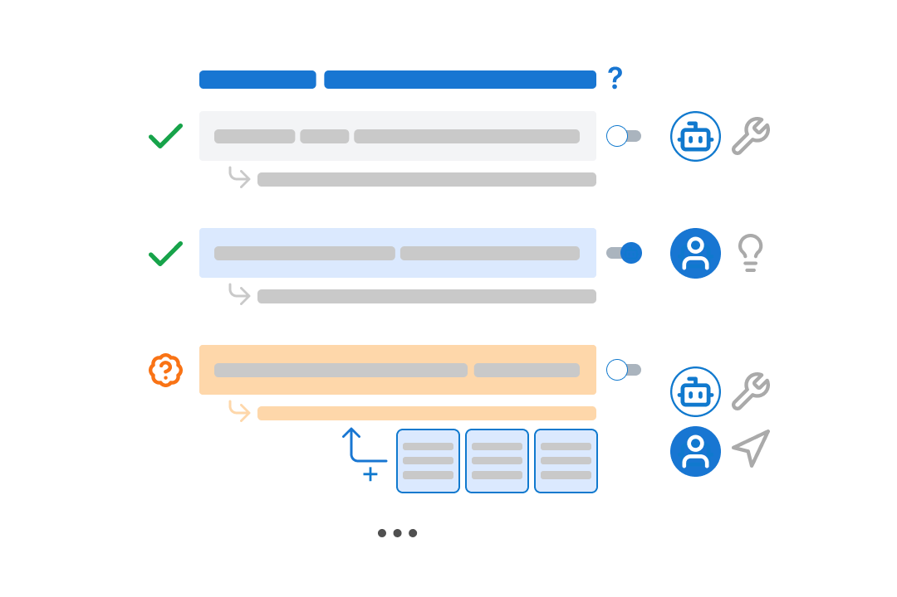
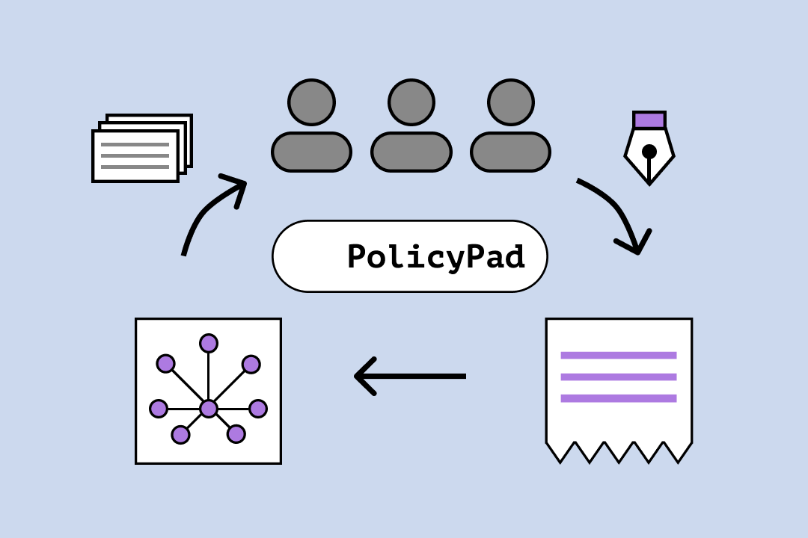
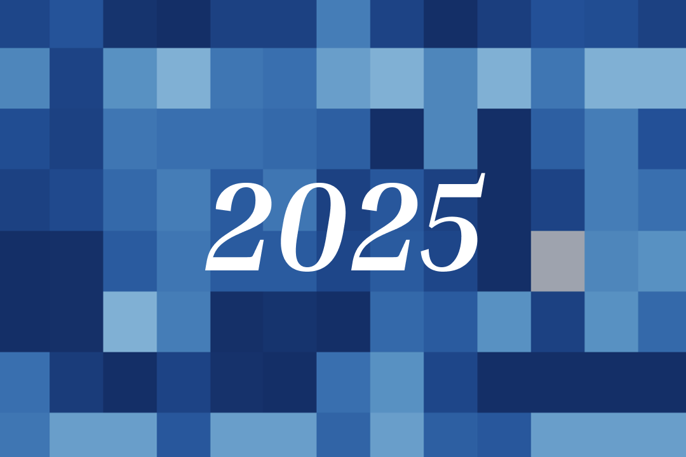

(see Google Scholar for full list)
Note: I publish under "K. J. Kevin Feng" in HCI academic venues.

Cocoa: Co-Planning and Co-Execution with AI Agents
We propose a new interaction paradigm for human-agent collaboration, and implement it into Cocoa, an agent-powered document editor for scientific researchers.
CHI 2026 🏆 Best Paper (top 1%) Proceedings arXiv Demo Slides
Levels of Autonomy for AI Agents
We introduce a 5-level framework for AI agent autonomy and discuss its applications for agent governance, human-agent collaboration, and agent evaluation.
Knight Institute 2025 Proceedings arXiv

PolicyPad: Collaborative Prototyping of LLM Policies
We reframe the authoring of model behavioral policies (e.g., AI Constitutions/Model Spec) as a prototyping practice, and contribute a workflow + system for collaboratively prototyping these policies.
CHI 2026 + ICLR Bi-Align 2025 (Oral) Proceedings arXiv Demo Code Slides

The 2025 AI Agent Index: Documenting Technical and Safety Features of Deployed Agentic AI Systems
Leon Staufer, Kevin Feng, Kevin Wei, Luke Bailey, Yawen Duan, Mick Yang, A. Pinar Ozisik, Stephen Casper, Noam Kolt
We analyze 30 agentic systems deployed in 2025, finding that most developers share limited information about their systems' safety, evaluations, and societal impacts.
FAccT 2026 Proceedings arXiv Website